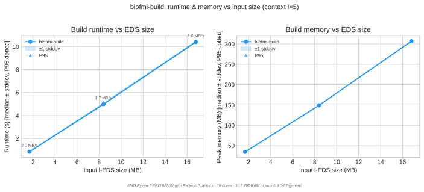
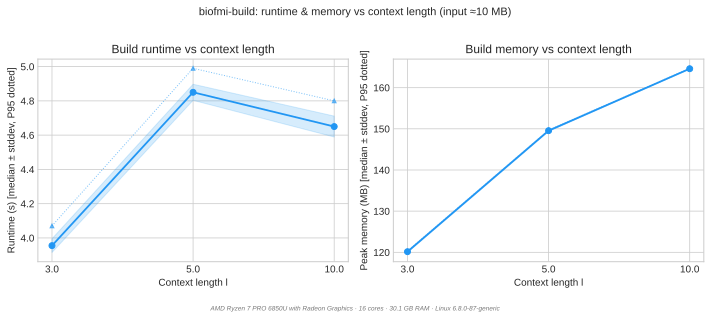
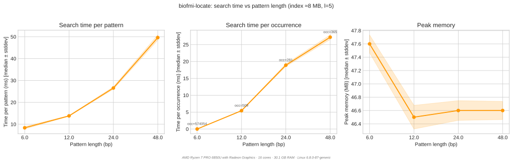
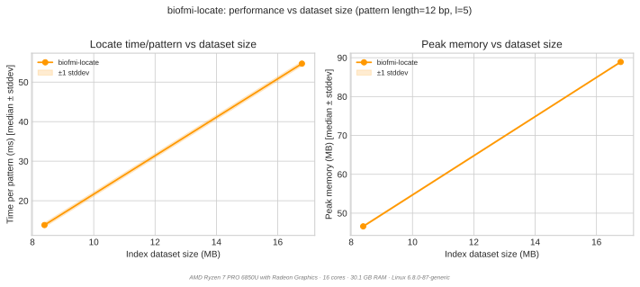

Benchmarks¶
BioFMI ships a self-contained benchmark suite in tests/bench/. It measures
what building and querying an index cost in time and memory, across input
size, context length l, pattern length, and dataset size.
What this page is, and is not
This is a regression check on this code, not an evaluation of the method. It answers "did this change make the index slower or fatter?" on synthetic data that the suite generates itself.
It does not answer "is a dual FM-index over an l-EDS a good idea?" — that needs real pangenomic panels, an occurrence oracle, and a comparison against alternatives. That evaluation belongs to the paper, and its harness lives outside this repository.
Running it¶
cd tests/bench
./bench.sh --size quick # ~5 min smoke test
./bench.sh # ~12 min, the default
./bench.sh --size large # ~90 min full sweep
Each run writes results/YYYY-MM-DD_HH-MM-SS.csv and, if matplotlib and
pandas are installed, plots beside it in results/plots/<stem>/.
python3 bench_plot.py # re-plot the newest CSV as PNG
python3 bench_plot.py --format svg # as SVG — what this page carries
./bench_compare.sh # regression check against baseline.csv
bench_compare.sh exits non-zero if any metric exceeds 120 % of the baseline.
On its first run it bootstraps results/baseline.csv from the newest result.
Which binaries get measured¶
The build tree, always — build/tools/ before PATH, and
external/edsparser/build/tools/ before PATH for the data generators. This
matters more than it sounds: ~/.local/bin is normally on PATH, so the
previous order meant benchmarking whatever was last installed rather than the
tree the run was launched from. Set BIOFMI_TOOLS_FROM_PATH=1 to measure
installed binaries deliberately.
No large data in this repository¶
The suite generates every panel it needs from a seed, inside a mktemp -d
under a trap, and deletes it on exit. Nothing generated is committed. The
scale is the reason: a 10 MB reference expands to roughly a 100 MB l-EDS and a
230 MB index, and that is data, not source.
What the repository does carry is small and textual:
| Path | What | Size |
|---|---|---|
tests/bench/*.sh, bench_plot.py |
the harness | ~45 KB |
tests/bench/baseline.csv |
regression anchor | 2 KB |
docs/img/bench_*.svg |
the plots on this page | tens of KB |
tests/data/ |
a small committed sample panel | see below |
tests/e2e/data/ |
hand-checkable fixtures | < 1 KB |
.gitignore enforces this: *.eds, *.leds, *.seds, *.edz and
*.patterns are ignored everywhere, with narrow exceptions for the committed
fixture directories.
Scenarios¶
| Scenario | Varies | Held fixed |
|---|---|---|
build_size_sweep |
EDS input size | l = 5 |
build_context_sweep |
context length l |
5 MB input |
locate_pattern_length |
pattern length | 5 MB index, l = 5 |
locate_dataset_size |
index dataset size | \|P\| = 2(l+1), l = 5 |
Presets:
| Preset | Reps | Build sizes | l values |
Pattern lengths | Patterns/run |
|---|---|---|---|---|---|
quick |
5 | 1, 5 MB | 5 | 6, 12 | 50 |
standard |
10 | 1, 5, 10 MB | 3, 5, 10 | 6, 12, 24, 48 | 200 |
large |
10 | 5, 25, 50 MB | 3, 5, 10, 20 | 6, 12, 24, 48, 96 | 500 |
Pattern lengths are multiples of l+1, not of l
The chunk size is l+1, so |P| a multiple of l+1 is the case the search
is built for — every chunk is full. Any other length leaves an
r = |P| mod (l+1) tail, which is a far less selective lookup.
These lists were multiples of l until 2026-09-02, with a comment saying so.
That was correct when the chunk size was l; the off-by-one fix made it
l+1 and the presets were never updated. Every locate benchmark had been
measuring the tail path without saying so — "pattern length 10" meant one
full chunk plus a 4-character tail, and the tail dominated the number. See
the tail cost table.
Results¶
Measured 2026-09-02 with the standard preset, N = 10 reps per cell, on:
AMD Ryzen 7 PRO 6850U · 16 cores · 30 GB RAM · Linux 6.8.0-87 · CPU governor
powersave, temp dir on ext4. The suite warns about both;performanceandTMPDIR=/dev/shmreduce jitter. Every plot repeats this footer, so numbers from different machines are not silently compared.
Run-to-run spread is small — stddev is under 1.5 % of the median on every build cell and under 7 % on every locate cell — so the medians below are stable and differences larger than a few percent are real.
Building¶

| l-EDS input | time | peak RSS | s/MB | RSS/MB |
|---|---|---|---|---|
| 1.68 MB | 0.86 s | 34.8 MB | 0.51 | 20.7 |
| 8.39 MB | 4.99 s | 149.2 MB | 0.59 | 17.8 |
| 16.79 MB | 10.39 s | 306.6 MB | 0.62 | 18.3 |
Both are linear in the l-EDS, and the memory constant is the one to remember:
peak build RSS is roughly 18x the l-EDS size. That is what decides whether a
panel builds at all, and it is why the l sweep terminates where it does — the
l-EDS grows with l, so the memory wall arrives through the input, not through
the algorithm.

l |
l-EDS | time | peak RSS | s/MB |
|---|---|---|---|---|
| 3 | 8.28 MB | 3.96 s | 120.2 MB | 0.48 |
| 5 | 8.39 MB | 4.85 s | 149.6 MB | 0.58 |
| 10 | 13.58 MB | 4.65 s | 164.6 MB | 0.34 |
Read this one carefully: the input is not held fixed, because it cannot be.
A larger l merges more aggressively, so the l-EDS itself grows — 8.28 MB at
l = 3 against 13.58 MB at l = 10. Against that, l = 10 builds faster in
absolute terms than l = 5 while indexing 62 % more text, so throughput
improves markedly with l (0.34 s/MB against 0.58). Larger context windows
produce fewer, longer segments, and the index construction likes that.
Querying¶

200 patterns, l = 5, 8.4 MB index. |P| is a multiple of the chunk size 6, so
every chunk is full and no tail is involved.
\|P\| |
chunks | time | per pattern | peak RSS | occurrences |
|---|---|---|---|---|---|
| 6 | 1 | 1.67 s | 8.4 ms | 47.6 MB | 574,054 |
| 12 | 2 | 2.76 s | 13.8 ms | 46.5 MB | 509 |
| 24 | 4 | 5.31 s | 26.6 ms | 46.6 MB | 281 |
| 48 | 8 | 9.92 s | 49.6 ms | 46.6 MB | 365 |
Cost tracks the chunk count, not the pattern length, and slightly sublinearly — 8.4, 6.9, 6.6, 6.2 ms per chunk as the pattern lengthens, because each additional chunk starts from a smaller surviving candidate set. Memory is flat: the search state is the candidate map, not the pattern.
The single-chunk row is the interesting one. A 6-character pattern matches 574,054 times against 509 for a 12-character one — over a thousand times more work returned — and still costs less than the two-chunk query. A short pattern is not expensive because it is short; it is expensive only when the answer is genuinely enormous. See the cost tables for where that does become the binding constraint.

200 patterns of length 12, l = 5.
| index | time | per pattern | peak RSS |
|---|---|---|---|
| 8.39 MB | 2.77 s | 13.9 ms | 46.6 MB |
| 16.79 MB | 10.94 s | 54.7 ms | 88.9 MB |
Memory is linear in the dataset; time is not. Doubling the index costs 1.9x
the memory but 3.9x the time, and occurrence count only rose 1.6x, so the
answer size does not explain it. Two points cannot fix an exponent, and this is
the clearest thing in the suite worth a --size large run to pin down: if the
trend holds, query cost is closer to quadratic than linear in panel size, which
matters far more for scaling to real pangenomes than anything else measured
here.
CSV schema¶
timestamp, preset, scenario, phase, tool,
input_size_mb, context_length,
pattern_length, n_patterns, n_occurrences, ← empty on build rows
n_reps,
runtime_median_s, runtime_mean_s, runtime_stddev_s, runtime_p95_s, runtime_p99_s,
memory_median_mb, memory_mean_mb, memory_stddev_mb, memory_p95_mb, memory_p99_mb
bench_plot.py derives three more:
throughput_mb_s=input_size_mb / runtime_median_s— build rowstime_per_pattern_ms=runtime_median_s × 1000 / n_patterns— locate rowstime_per_occurrence_ms=runtime_median_s × 1000 / n_occurrences— locate rows
Every plot carries a footer naming the machine that produced it — CPU, cores, RAM, OS — so numbers from different machines are not silently compared.
See also¶
locate()specification — what a query returns and what a short tail costs- Index internals — where build time and index bytes go
- CLI reference —
--benchmarkonbiofmi-locatefor per-query timing